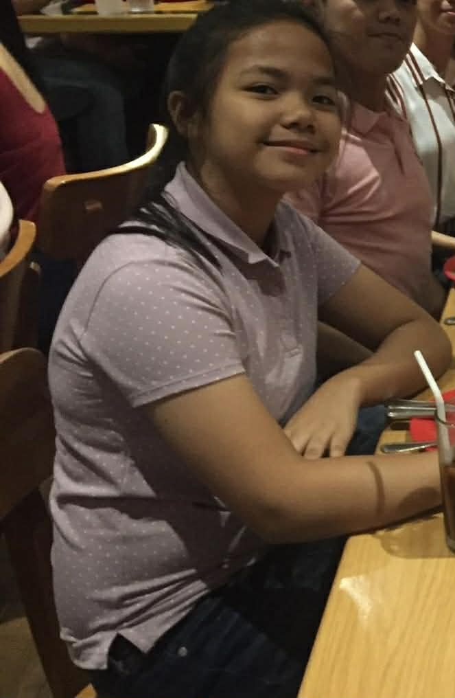
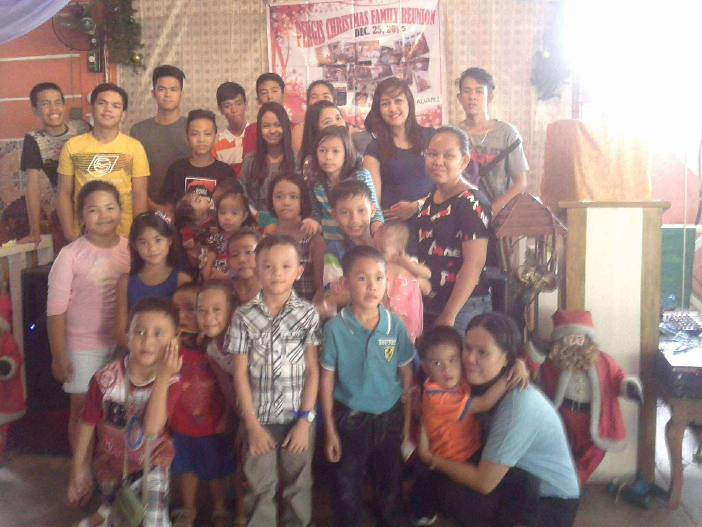
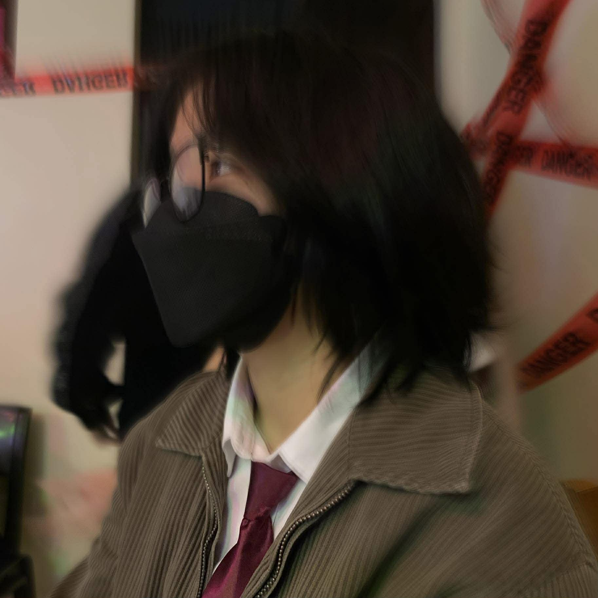
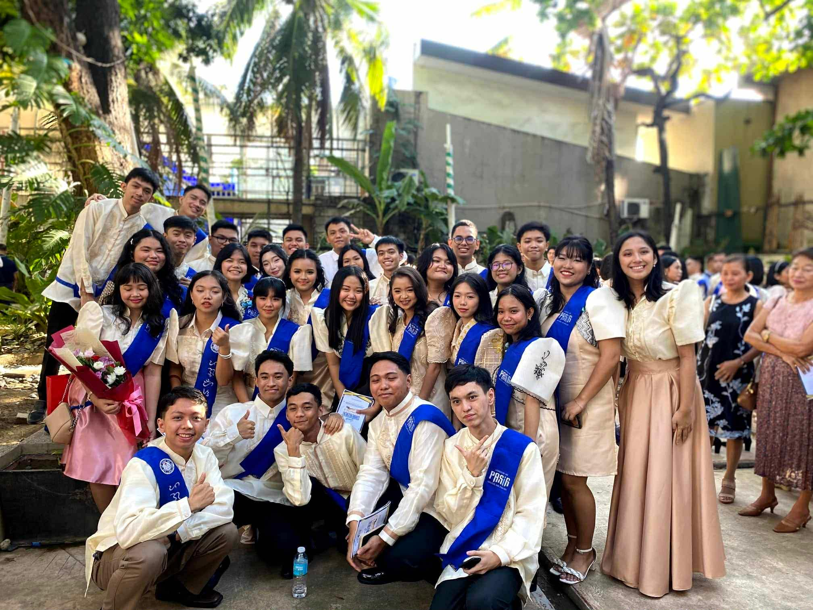
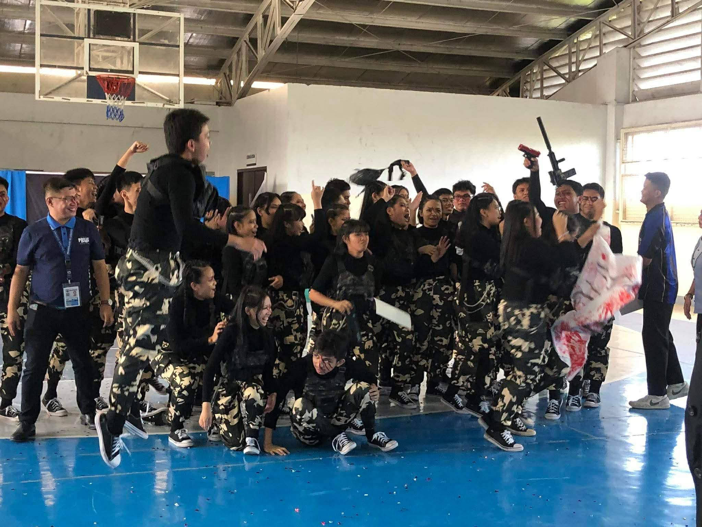
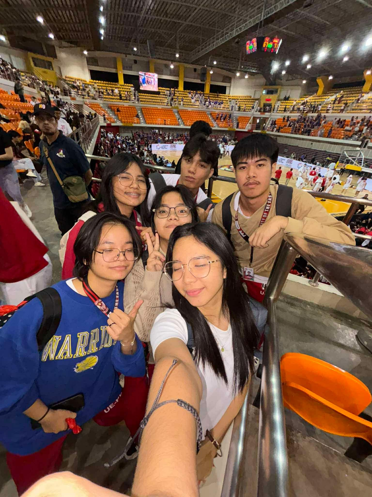
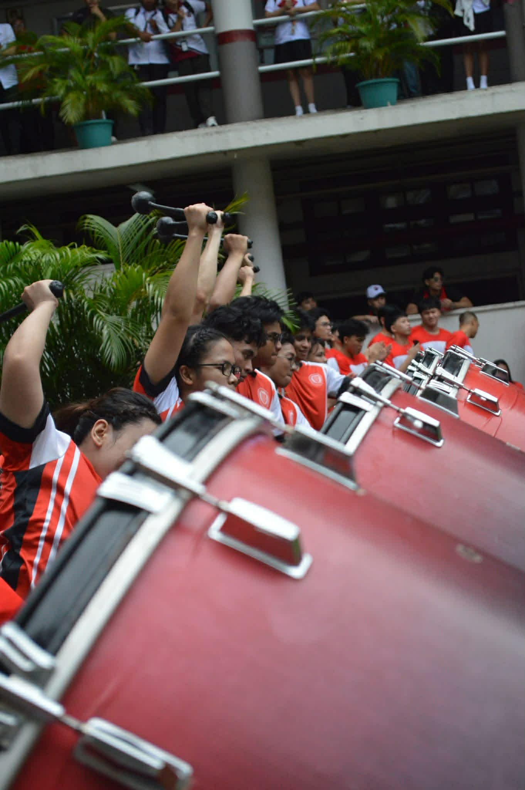

by Mary Christelle Palmero
1Learning to ride a bike was a thrilling experience for a child. 2Me, personally, have experienced ridiculous moments upon learning how to ride one. 3Starting with one that has training wheels was the first step for me. 4I was able to ride it comfortably within a short period of time. 5After getting used to it, I decided to move forward with a bicycle alone. 6Hopping on it was easy, but staying still… not so much. 7I got so wobbly to the point where my gathered friends had to support me side-by-side. 8Nervousness got less, but within just a few moments, my friends pushed and let go of me, making me wobble my way down a small steep hill at the end of our street. 9In that very moment I was scared to death–holding my breath as if I was holding my soul. 10I didn’t want to fall and get hurt, and most importantly, I didn’t want to hit another soul near my path. 11The moment I landed on the ground, I was still unstable, but I didn’t fall nor hit another soul–thank God. 12In fact, I held on much stronger and let the force from the steep ground push me forward, until I got the hang of it. 13It was a quick thrilling moment for me, but right after that, I was able to ride a bicycle all on my own. 14A core memory that shaped the kind of person I am. 15My parents named me Mary Christelle, because my birth day was relevant to Mama Mary, December 08 - Feast of Immaculate Concepcion. 16No matter how pretty it sounds, I still prefer to be called by my nicknames, Mc or Maki. 17My experience on learning how to ride a bike was significant, because then, I realized how scared yet adventurous my personality is. 18I spent most of my childhood trying different activities, from different sports to different hobbies to different mini businesses. 19I tried most of them with fear, yet my curiosity and hunger for experience kept me to the ground with my head held high. 20Always aiming to the top, doing everything all at once to claim the highest prize among all. 21But, little did I know, the knowledge I earn matters the most.


1Stepping on my teenage years taught me the most emotional instances a person may encounter. 2I experienced my first innocent love, first heartbreak, drastic grief from the day my father died, and too much anger due to reckless reasons. 3Most moments are rooted from my will to experience. 4The chaos started when I entered junior high. 5I was 13yrs old, and most of the people surrounding me have already widened their social life. 6As an introvert, I didn’t care much at first. 7All I was thinking was socializing drains me so much I’d rather sulk to death. 8Not until I got too attached to another individual who shares the same hobbies and sentiments as me. 9I learnt how much I can offer to someone just for them to stay with me. 10That’s when I felt pleasing other people matters a lot. 11Thoughtfulness to them but not to myself. 12I strived on most aspects of my teenage life just to have that kind of prize–to be appreciated. 13Later on, I suffered from selflessness, but I did not know that it affects my people worse than I thought. 14My thinking was shallow. 15I often decide what's best for the people that care about me leading to a more shattered relationship. 16Indecisive to my being, but decisive for others. 17I became a troubled kid that lies about where she’s going just to meet up with the people I crave love from, lies for the reason I asked for the money for, and all other things I feel embarrassed now. 18I also got to the point where I feel my anger higher than ever because of betrayals, abandonment, and not meeting expectations. 19Regardless, my hunger to explore and to feel didn’t waver. 20After everything, I still stood high, striving academically and personally, because that’s who I am.



1Before turning to college, I spent the 2 years of my senior year in a prestigious school, Pasig City Science High School. 2I must say, I was trained well. 3There was no day that I felt chill because of how demanding that school is when it comes to student’s performance. 4Break times were used to prepare for the next class because there can be a surprise quiz or graded recitation. 5The moment I turned college, some things were new to me, especially the system. 6Fast paced school calendar, longer breaks, shorter discussions, and greater pressure. 7To me, college is a brick that is wrapped with cotton foams, imitating a pillow. 8Seems easy to acquire, but in reality it requires great effort to have and carry. 9I’m unsure if other universities are also like that, but it is here in University of The East. 10My first year turned out to be lighter than I expected, that’s why I decided to join an extracurricular that offers scholarships once I stayed long enough. 11However, I wasn’t able to stay for long because of how conflicted my schedule became after getting to my 2nd year. 12I even got to the point where I almost failed my Calculus class because of how determined I was on getting a scholarship. 13In the end, I removed my membership and focused on academics instead. 14Luckily, I was able to maintain my overall grade for the sem to keep my Pasig scholarship. 15There may be regrets from joining that organization, but the experience, development, and connections I established remain significant to me, that’s why I’m still grateful for committing. 16Now that I have more time for academics, pressure arises more. 17Not seeing it as a danger coming at me, but an opportunity to do better and prepare myself for the near future of choosing a specific career. 18I’m at the point of life where I feel immune to the emotion when things do not work out, living to the phrase ‘It is what it is.’ 19Telling myself that my life does not revolve for one aspect at a time, but simultaneously with others. 20I can finally say that I don’t live solely for others anymore, because all this time, the appreciation that I really need the most is from myself.

